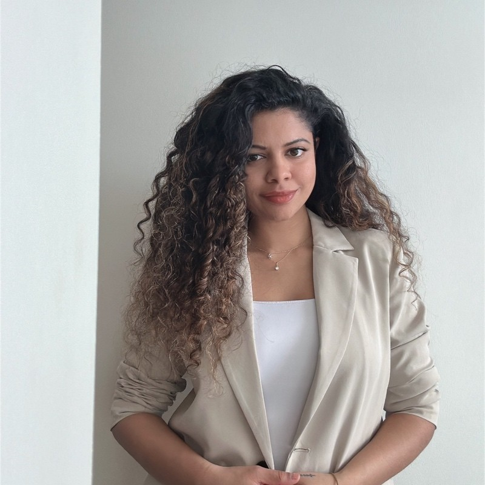
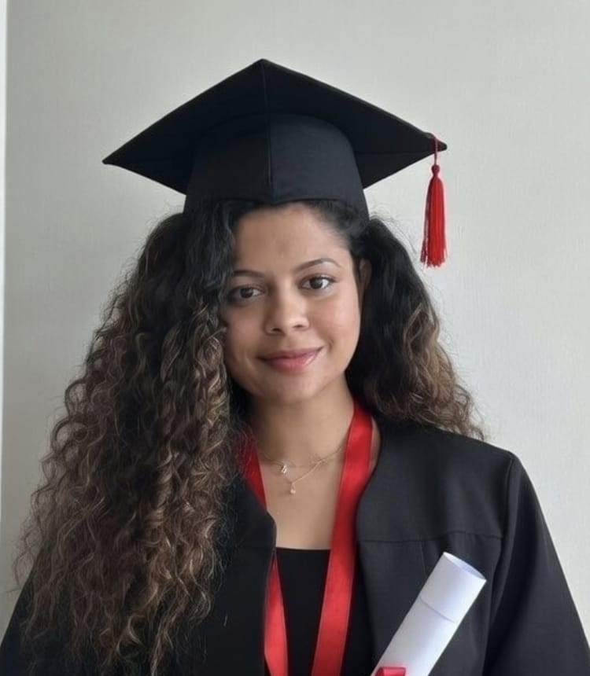
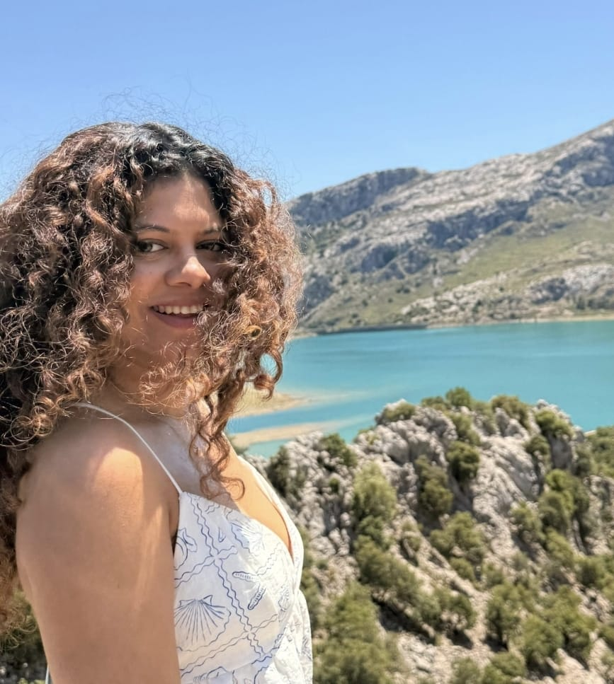

Heidy Q Dias
Marine Biologist & Deep-sea Explorer
I'm a
Specialising in deep-sea biotope classification, seabed mapping, benthic ecology and ecological quality assessment. Passionate about science that supports sustainable ocean management.


Heidy Q Dias, PhD
Senior Scientific Officer | Marine Biologist
Get to Know Me
Mapping the Deep Ocean for Better Management
I am a marine biologist specialising in deep-sea biotope classification, seabed mapping, benthic ecology and ecological quality status assessment. My research combines acoustic data, ROV video and trait-based approaches to understand and protect vulnerable marine ecosystems.
Currently Senior Scientific Officer at the Agri-Food and Biosciences Institute (AFBI) in Belfast. Previously Research Fellow at Queen’s University Belfast and researcher at CSIR–National Institute of Oceanography, India.
16
Publications
210
Citations
2.2k+
Reads
Specialisation
Deep-Sea & Benthic Ecology
Current Role
Senior Scientific Officer, AFBI
Education
PhD Marine Sciences
Location
Belfast, Northern Ireland
Publications
Citations
Reads
Years Experience
Skills & Expertise
From ResearchGate profile and professional experience
Core Research Areas
Deep-Sea & Seabed Mapping
95%Benthic Ecology & Functional Diversity
92%Biological Trait Analysis
90%Ecological Quality Status Assessment
88%Methods & Tools
Benthic Indices (AMBI, M-AMBI)
90%Marine Protected Areas & Connectivity
85%R / Spatial Analysis / GIS
85%ROV Video & Acoustic Analysis
88%Resume
Professional experience and education

Professional Summary
Marine biologist with expertise in deep-sea biotope classification, seabed mapping, benthic ecology, biological trait analysis and ecological quality assessment. Passionate about producing science that informs spatial management of vulnerable marine ecosystems.
Contact
- Belfast, Northern Ireland, UK
- ResearchGate
Professional Experience
Senior Scientific Officer
Dec 2025 – Present
Agri-Food and Biosciences Institute (AFBI), Northern Ireland
- Leading marine research supporting sustainable fisheries and environmental management
- Contributing to habitat and species assessments in Northern Irish waters
Research Fellow
Aug 2023 – Nov 2025
Queen’s University Belfast
- Led research on deep-sea biotope classification using ROV video and acoustic data (Tropic Seamount)
- Published key papers on deep-sea habitat mapping and the legal landscape of deep-sea mining
Senior Research Fellow / Research Project Assistant
2014 – 2022
CSIR – National Institute of Oceanography, India
- Research on benthic ecology, ecological quality status and functional diversity in tropical estuaries and coastal systems
Education
Doctor of Philosophy (PhD) – Marine Sciences
2018 – 2023
Andhra University
Master of Science (MSc) – Marine Sciences
2012 – 2014
Goa University (Grade: 8.2/10)
Bachelor of Science (BSc) – Zoology / Animal Biology
2009 – 2012
Goa University
Research & Publications
Selected papers from ResearchGate (16 publications · 210 citations · 2,281 reads)
Expertise
Areas of scientific contribution
Deep-Sea Biotope Classification
Developing top-down and bottom-up approaches using acoustic data and ROV video for seamount and deep-sea habitats.
Seabed Mapping & Benthic Ecology
Characterising benthic communities, functional diversity and ecosystem connectivity in coastal and deep-sea environments.
Ecological Quality Assessment
Applying benthic indices (AMBI, M-AMBI) and trait-based approaches for EcoQS assessment in tropical and temperate systems.
Science for Policy
Contributing to the science–policy interface, including the legal and environmental aspects of deep-sea mining.
Spatial Analysis with R
Using R for mapping, spatial statistics and integration of environmental and biological datasets.
Collaborative Research
Working across institutions (QUB, AFBI, NIO, NOC and others) on multi-disciplinary marine projects.
Contact
Get in touch about research collaborations or opportunities
Contact Info
Based in Belfast, Northern Ireland. Open to scientific collaboration.
Location
Belfast, Northern Ireland
United Kingdom